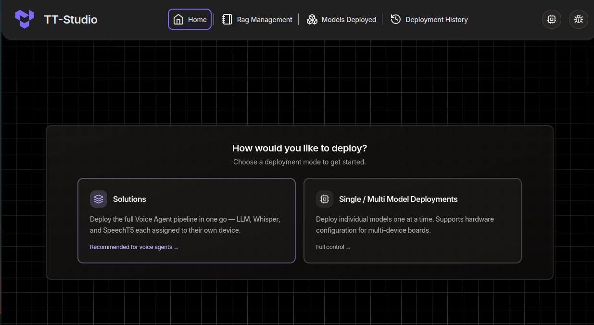

Hardware and Software Setup
This guide shows users how to safely unbox, setup hardware, and install software on a TT-QuietBox™ 2 (Blackhole®) workstation.
Tip
For the complete handbook — system access & management, workloads & development, troubleshooting & recovery, and reference material beyond first setup — see the TT-QuietBox 2 Guide.
Before You Begin
Choose a suitable location for your System:
Choose a stable area for the TT-QuietBox 2 where it will not need to be moved regularly. To ensure proper airflow intake, allow for 10 inches (25 cm) of clearance around the body of the workstation. Also avoid placing items on top of the workstation, as this can block the heat exhaust.
The Power Supply Unit (PSU) on the TT-QuietBox 2 is rated to draw up to 1600W of power and has demonstrated drawing 1200W of power running image generation models. A standard 15A circuit can handle up to 1800W. When choosing the location of your TT-QuietBox 2, be mindful of the other electronics which may draw power from the same circuit. We recommend putting the TT-QuietBox 2 on a dedicated circuit, if not you may trip a breaker.
Review the safety warnings.
Inspect your package for signs of damage. Do not proceed with unboxing or installation if you suspect shipping damage to the system. Contact Tenstorrent support by raising a support request. Our team will review your request and provide assistance.
Required Tools
Ensure you have everything you need to get started.
The Tenstorrent TT-QuietBox 2 (Blackhole) (TW-04003) package includes the following items:
1x TT-QuietBox 2 (Blackhole) workstation
1x Power Supply Cord (C19 to NEMA 5-15P)
1x AnkerWork S500 speakerphone (included for some early customers to develop with text-to-speech (TTS) and speech-to-text (STT) AI models)
For setup, you will also need your own:
Keyboard
Mouse
HDMI cable + monitor
Note: Only use certified HDMI cables with the TT-QuietBox 2. Using non-certified HDMI cables may result in device damage, or non-compliant video operation.
Step 1: Unbox the Workstation
Position the box in your prepared unboxing area, ensuring ample space to work around it.

Remove the white side clips near the bottom of the packaging. Squeeze the tabs on the clip and pull to release.


Lift box lid, remove accessories box and styrofoam, then remove internal cardboard case.


Lift the TT-QuietBox 2 out of the package using the handles.

Remove protective wrapping on all sides.


Step 2: Set Up the Hardware

Connect the power cable. Connect the provided C19 power cable to the workstation and then to a dedicated power outlet. See the Electrical Safety section for the full list of power requirements.
Connect peripherals. Connect the HDMI monitor, keyboard, and mouse to the back of the workstation. (Please note: video is not supported through the USB-C port). For internet connections, we recommend Ethernet over WiFi for faster downloading of models. If you prefer Ethernet, connect your Ethernet cable to the RJ45 port.
Power on the workstation. On the back of the workstation, flip the switch on the PSU to the “I” position.
On the front of the workstation, press the power button to turn the system on.

Step 3. First-Time Log In
Once your system is booted up, the login prompt will appear.
Enter the default password: ttuser
Step 4. Change Default Password
After logging in, open a Terminal window by pressing Ctrl+Alt+T and follow these steps to change your password from the public default:
Run command:
passwdEnter current password: ttuser
Enter new password of your choosing and hit enter to confirm the change.
Step 5. Setup and Confirm Internet Connection
TT-QuietBox 2 can be connected to the internet via WiFi or Ethernet cable. For faster model downloads, we recommend a direct Ethernet connection.
If you have not done so already during hardware setup, connect your Ethernet cable to the standard RJ45 port on the back of the workstation. Then, verify your internet connection by clicking on the status icons in the upper right corner of the screen. Confirm the internet connection reads “Wired.”
If you would prefer to set up a WiFi connection, on your monitor, click on the status icons in the top right corner of the screen. Then, click on “Wi-Fi” (it may say “not connected” or “off”). Select your WiFi network from the drop-down list, enter the password, and click “Connect.”
Step 6. Update System Software
TT-QuietBox 2 comes pre-installed with the Ubuntu operating system (24.04.3 LTS).
Step 1: Upon logging in, a Ubuntu Software Updater may offer a prompt that new software has been issued since the latest release. If this prompt appears, click “Install Now” to download the latest Ubuntu updates.
Step 2: To ensure you have the latest system package updates, open a Terminal window by pressing Ctrl+Alt+T and run:
sudo apt update && sudo apt upgrade -y
Step 3: Install the latest Tenstorrent firmware and system software, which will then trigger a system reboot:
curl -fsSL https://github.com/tenstorrent/tt-installer/releases/latest/download/install.sh -O
chmod +x install.sh
./install.sh \
--kmd-version=2.8.0 \
--smi-version=5.2.0 \
--flash-version=3.8.0 \
--fw-version=19.10.0 \
--metalium-image-tag=v0.72.0 \
--mode-non-interactive \
--install-container-runtime=no
Log in with ttuser and proceed to the next step.
Step 7: Verify System Recognition of Blackhole Cards
To verify all cards are up and running in your TT-QuietBox, launch TT-SMI. This is Tenstorrent’s simple command line utility that displays devices, device telemetry and other system information.
In the terminal your shell prompt should read:
(.tenstorrent-venv) ttuser@tt-quietbox:~$Run command
tt-smiUnder the “Device Information” pane, you should see an output which lists four recognized accelerators. See the screenshot below for reference.

Important
If .tenstorrent-venv is not active, or you don’t see all four accelerators listed in the Device Information pane of TT-SMI, please visit the troubleshooting page.
Once all cards have been verified, close TT-SMI by pressing Q on your keyboard.
Note
Setting up your TT-QuietBox 2 for more than one person? Follow these steps to set up another user on your TT-QuietBox 2.
Step 8: Get Access to Model Weights
TT-QuietBox 2 comes pre-installed with TT Studio, Tenstorrent’s simple web interface for running AI models.
For the most up-to-date list of models supported by TT-QuietBox 2, check the Developer Hub.
TT Studio uses the Hugging Face API to manage open-source AI model weights and configuration files. Hugging Face is a free, open source community for collaborating on AI models and applications. Hugging Face access tokens are the unique security keys that allow weights from AI models to be downloaded to your machine. Read more about how user access tokens work in the Hugging Face documentation.
To get access to model weights on Hugging Face, follow these steps:
Open a new browser window and navigate to huggingface.co.
Create or log in to your Hugging Face account.
Create your access token at huggingface.co/settings/tokens. Copy and securely store the access token as it is only displayed once and will be needed in the next step.
Some of the models in TT Studio (Llama-3.1-8B-Instruct and Llama-3.3-70B-Instruct) require access to be granted by the model developer via the Hugging Face website. For these models, click Request Access and read and sign any required community license agreements.
Step 9: Launch TT Studio
Open a terminal window and pull the latest from the TT Studio github repo:
cd ~/.local/lib/tt-studio
git pull
When the process is complete, run this command in Terminal to open TT Studio:
tt-studio
When prompted, paste in your HuggingFace access token from the previous step.
Choose to install dependencies with Docker by entering “Y”. It may take a few minutes to build the docker containers. When prompted, enter your sudo password (this is the same password you use to log in to your workstation). Administrative access is required to set up TT Inference Server, the engine which runs AI models on Tenstorrent hardware.
The TT Studio web app will now launch in your default web browser.
{kind=link}

To get a model running as quickly as possible, select “Single / Multi Model Deployments” and then choose “Qwen3-32B” from the Select Model dropdown. Click “next” and “Deploy”.
Once the model is ready, click “Chat” or “API” to interact with the model in realtime.
Note
Downloading other models can take anywhere from a few minutes to a few hours, depending on the model you’ve selected and the speed of your internet connection. WiFi connections will be slower than direct Ethernet.
What to do next?
Need Additional Support?
If you encounter any issues, or have a question that isn’t covered in this guide, please raise a support request. Our team will review your request and provide assistance.